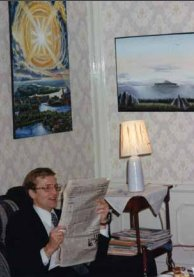
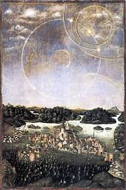
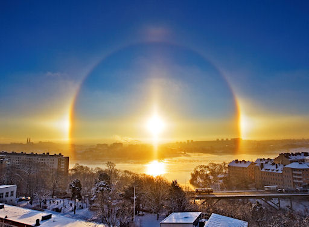

1975
1975 1 jan. Tredje sjuårsperioden börjar.
Årets motto är "Skapandet av Himmelriket."
1975 Missionary Testimonies (eng.)
. World Mission Center i New York grundas.
16 jan. Day of Hope banketten (700 människor)
. Sekai Nippo, japansk tidning grundas.
8 feb. 1800 par välsignas.

. New Future Films grundas.
11 feb. Han ger ett tal till allmänheten vid Budokan Hall i Tokyo. (20 000 människor)
. New York City Symphony
12 feb. Konferens för världsmissionärer.
Tre medlemmar från Tyskland, Japan och Amerika sänds ut till 127 nationer som missionärsteam.
Citat ur CBG bok 6;
De 36, 72 och 124 paren symboliserar de 12, 70 och 120 lärjungarna som stod med Jesus på det nationella
fundamentet. Eftersom de 70 lärjungarna representerade nationen och 120 lärjungar världen, måste de välsignade
medlemmarna upp till 124 par ta ledningen genom lidande och ansvar för hela världen. Med tanke på att detta
var det ursprungligen de 124, 72 och 36 paren som skulle ha skickats ut som utländska missionärer.
Medan han skickade ut missionärer valde far också medlemmar som skulle utbildas till ledare i USA. Han kallade dem "Top Guns".
14 feb. Han återvänder till Amerika.
2 mars Kwon-Jin föds.
26 mars Han återvänder till Korea.
27 mars 563 medlemmar av IOWC anländer till Pusan.
1 apr. 'Day of Hope' festival i Pusan,Tae Gu,Seoul,Kwan Ju, Chung Ju,
Chung Buk och Chun Kang Won (16 maj).
1 maj Ceremoni för total befrielse av all bitterhet.
7 jun "Världsrally för Koreas befrielse", vid Yoido Plaza - 60 nationer från hela världen, 1,2 miljoner människor samlas.
På 70-talet gick två svenska konstnärer Benny (Googla Benny Andersson Art) & Bernth Uhno från området kring
Gryts skärgörd, med i rörelsen;
Se bl. a. den moderna solväderstavla av Bernth med rörelsens symbol över Stockholm. Till höger Sthlm 12 dec 2010
foto.



9 jun Gifta par välsignas.
(162 par från Korea, 62 par från Japan)
30 jun Nationellt officiellt förkunnelse-möte startar i Korea.
20 juli 40 dagars sommar-witnessing.
2 aug. 'Första sommarseminariet för lärare'.
12 aug. 14:e inbjudan till Principlektioner för professorer i Korea.
(53 deltagare)
20 sep Unification Theological Seminary - akademisk teologisk utbildning startar.
Världen: Helsingforskonferensen-Europeiska säkerhetskonferensen i Helsingfors; var en internationell konferens om säkerhet och samarbete som hålls i början av 1970-talet. Den öppnades i Helsingfors den 3 juli 1973, fortsatte senare i Genève (från 18 september 1973 till 21 juli 1975) och avslutades i Helsingfors 1 augusti 1975, i det då nybyggda Finlandiahuset. Deltagande stater var USA, Kanada, Sovjetunionen och alla europeiska stater inklusive Turkiet men inte Albanien och Andorra.
27 nov. 4:e Internationella Vetenskapskonferensen hålls i New York.
9 dec. Han utnämns till hedersdoktor i juridik på Ricar universitetet i staten Main.
18 dec. Han inbjuds av senatorer och kongressmän att hålla tal, 'Guds plan för Amerika' ges på rummet Korkus på Capitolium.
27 dec. Han återvänder till Korea.
30 dec. Han kommer tillbaks till Amerika.
Från Norge kommer Åse Ulimoen som 1:a missionär till Island 1972-1975.
Halvard från Norge sånds 1975 som 2:a missionär till Island. Med hans (senare) hustru Patricia arbetade Halvard
som Islands nationsledare i 18 är (1975-1993).